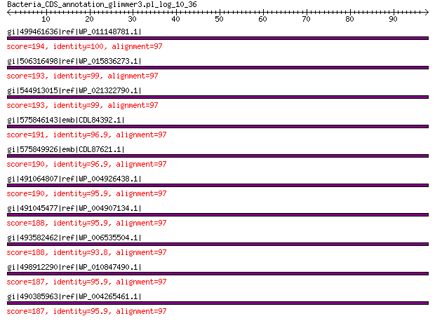

bitscore colors: <40, 40-50 , 50-80, 80-200, >200
 BLASTP 2.2.31+
Reference: Stephen F. Altschul, Thomas L. Madden, Alejandro A.
Schaffer, Jinghui Zhang, Zheng Zhang, Webb Miller, and David J.
Lipman (1997), "Gapped BLAST and PSI-BLAST: a new generation of
protein database search programs", Nucleic Acids Res. 25:3389-3402.
Reference for composition-based statistics: Alejandro A. Schaffer,
L. Aravind, Thomas L. Madden, Sergei Shavirin, John L. Spouge, Yuri
I. Wolf, Eugene V. Koonin, and Stephen F. Altschul (2001),
"Improving the accuracy of PSI-BLAST protein database searches with
composition-based statistics and other refinements", Nucleic Acids
Res. 29:2994-3005.
Database: All non-redundant GenBank CDS translations+PDB+SwissProt+PIR+PRF
excluding environmental samples from WGS projects
49,011,213 sequences; 17,563,301,199 total letters
Query= Bacteria_CDS_annotation_glimmer3.pl_log_10_36
Length=97
Score E
Sequences producing significant alignments: (Bits) Value
gi|499461636|ref|WP_011148781.1| 30S ribosomal protein S8 194 3e-61
gi|506316498|ref|WP_015836273.1| 30S ribosomal protein S8 193 6e-61
gi|544913015|ref|WP_021322790.1| 30S ribosomal protein S8 193 6e-61
gi|575846143|emb|CDL84392.1| 30S ribosomal protein S8 191 6e-60
gi|575849926|emb|CDL87621.1| 30S ribosomal protein S8 190 9e-60
gi|491064807|ref|WP_004926438.1| 30S ribosomal protein S8 190 9e-60
gi|491045477|ref|WP_004907134.1| MULTISPECIES: 30S ribosomal pro... 188 5e-59
gi|493582462|ref|WP_006535504.1| 30S ribosomal protein S8 188 7e-59
gi|498912290|ref|WP_010847490.1| 30S ribosomal protein S8 187 8e-59
gi|490385963|ref|WP_004265461.1| MULTISPECIES: 30S ribosomal pro... 187 9e-59
>gi|499461636|ref|WP_011148781.1| 30S ribosomal protein S8 [Photorhabdus luminescens]
gi|37528529|ref|NP_931874.1| 30S ribosomal protein S8 [Photorhabdus luminescens subsp. laumondii
TTO1]
gi|67461174|sp|Q7MYG5.1|RS8_PHOLL RecName: Full=30S ribosomal protein S8 [Photorhabdus luminescens
subsp. laumondii TTO1]
gi|36787967|emb|CAE17084.1| 30S ribosomal protein S14 [Photorhabdus luminescens subsp. laumondii
TTO1]
gi|604177073|gb|EYU13814.1| SSU ribosomal protein S8P [Photorhabdus luminescens BA1]
Length=130
Score = 194 bits (492), Expect = 3e-61, Method: Compositional matrix adjust.
Identities = 97/97 (100%), Positives = 97/97 (100%), Gaps = 0/97 (0%)
Query 1 VAIAKVLKEEGYIEDYKIEGDTKPELELVLKYFQGKAVVESIQRVSRPSLRIYKKKDELP 60
VAIAKVLKEEGYIEDYKIEGDTKPELELVLKYFQGKAVVESIQRVSRPSLRIYKKKDELP
Sbjct 34 VAIAKVLKEEGYIEDYKIEGDTKPELELVLKYFQGKAVVESIQRVSRPSLRIYKKKDELP 93
Query 61 QVMAGLGIAVVSTSKGVMTDRAARQAGLGGEILCYVA 97
QVMAGLGIAVVSTSKGVMTDRAARQAGLGGEILCYVA
Sbjct 94 QVMAGLGIAVVSTSKGVMTDRAARQAGLGGEILCYVA 130
>gi|506316498|ref|WP_015836273.1| 30S ribosomal protein S8 [Photorhabdus asymbiotica]
gi|253991675|ref|YP_003043031.1| 30S ribosomal protein S8 [Photorhabdus asymbiotica]
gi|253783125|emb|CAQ86290.1| 30S ribosomal protein S8 [Photorhabdus asymbiotica]
Length=128
Score = 193 bits (490), Expect = 6e-61, Method: Compositional matrix adjust.
Identities = 96/97 (99%), Positives = 97/97 (100%), Gaps = 0/97 (0%)
Query 1 VAIAKVLKEEGYIEDYKIEGDTKPELELVLKYFQGKAVVESIQRVSRPSLRIYKKKDELP 60
VAIAKVLKEEGYIEDYKIEGDTKPELELVLKYFQGKAVVESIQRVSRPSLRIYKKKDELP
Sbjct 32 VAIAKVLKEEGYIEDYKIEGDTKPELELVLKYFQGKAVVESIQRVSRPSLRIYKKKDELP 91
Query 61 QVMAGLGIAVVSTSKGVMTDRAARQAGLGGEILCYVA 97
QVMAGLGIAV+STSKGVMTDRAARQAGLGGEILCYVA
Sbjct 92 QVMAGLGIAVISTSKGVMTDRAARQAGLGGEILCYVA 128
>gi|544913015|ref|WP_021322790.1| 30S ribosomal protein S8 [Photorhabdus temperata]
gi|530711207|gb|EQC02068.1| 30S ribosomal protein S8 [Photorhabdus temperata subsp. temperata
M1021]
gi|550875184|gb|ERT14217.1| 30S ribosomal protein S8 [Photorhabdus temperata J3]
gi|572731305|gb|ETS29494.1| SSU ribosomal protein S8P [Photorhabdus temperata subsp. khanii
NC19]
gi|662546836|gb|KER01474.1| SSU ribosomal protein S8P [Photorhabdus temperata subsp. temperata
Meg1]
Length=130
Score = 193 bits (490), Expect = 6e-61, Method: Compositional matrix adjust.
Identities = 96/97 (99%), Positives = 97/97 (100%), Gaps = 0/97 (0%)
Query 1 VAIAKVLKEEGYIEDYKIEGDTKPELELVLKYFQGKAVVESIQRVSRPSLRIYKKKDELP 60
VAIAKVLKEEGYIED+KIEGDTKPELELVLKYFQGKAVVESIQRVSRPSLRIYKKKDELP
Sbjct 34 VAIAKVLKEEGYIEDFKIEGDTKPELELVLKYFQGKAVVESIQRVSRPSLRIYKKKDELP 93
Query 61 QVMAGLGIAVVSTSKGVMTDRAARQAGLGGEILCYVA 97
QVMAGLGIAVVSTSKGVMTDRAARQAGLGGEILCYVA
Sbjct 94 QVMAGLGIAVVSTSKGVMTDRAARQAGLGGEILCYVA 130
>gi|575846143|emb|CDL84392.1| 30S ribosomal protein S8 [Xenorhabdus szentirmaii DSM 16338]
gi|661559771|emb|CDG16002.1| 30S ribosomal protein S8 [Xenorhabdus doucetiae]
Length=130
Score = 191 bits (484), Expect = 6e-60, Method: Compositional matrix adjust.
Identities = 94/97 (97%), Positives = 96/97 (99%), Gaps = 0/97 (0%)
Query 1 VAIAKVLKEEGYIEDYKIEGDTKPELELVLKYFQGKAVVESIQRVSRPSLRIYKKKDELP 60
VAIAKVLKEEGYIED+KIEGDTKPELE+ LKYFQGKAVVESIQRVSRPSLRIYKKKDELP
Sbjct 34 VAIAKVLKEEGYIEDFKIEGDTKPELEITLKYFQGKAVVESIQRVSRPSLRIYKKKDELP 93
Query 61 QVMAGLGIAVVSTSKGVMTDRAARQAGLGGEILCYVA 97
QVMAGLGIAVVSTSKGVMTDRAARQAGLGGEILCYVA
Sbjct 94 QVMAGLGIAVVSTSKGVMTDRAARQAGLGGEILCYVA 130
>gi|575849926|emb|CDL87621.1| 30S ribosomal protein S8 [Xenorhabdus cabanillasii JM26]
Length=130
Score = 190 bits (483), Expect = 9e-60, Method: Compositional matrix adjust.
Identities = 94/97 (97%), Positives = 96/97 (99%), Gaps = 0/97 (0%)
Query 1 VAIAKVLKEEGYIEDYKIEGDTKPELELVLKYFQGKAVVESIQRVSRPSLRIYKKKDELP 60
VAIAKVLKEEGYIED+KIEGDTKPELE+ LKYFQGKAVVESIQRVSRPSLRIYKKKDELP
Sbjct 34 VAIAKVLKEEGYIEDFKIEGDTKPELEVTLKYFQGKAVVESIQRVSRPSLRIYKKKDELP 93
Query 61 QVMAGLGIAVVSTSKGVMTDRAARQAGLGGEILCYVA 97
QVMAGLGIAVVSTSKGVMTDRAARQAGLGGEILCYVA
Sbjct 94 QVMAGLGIAVVSTSKGVMTDRAARQAGLGGEILCYVA 130
>gi|491064807|ref|WP_004926438.1| 30S ribosomal protein S8 [Providencia stuartii]
gi|386743646|ref|YP_006216825.1| 30S ribosomal protein S8 [Providencia stuartii MRSN 2154]
gi|188019717|gb|EDU57757.1| ribosomal protein S8 [Providencia stuartii ATCC 25827]
gi|384480339|gb|AFH94134.1| 30S ribosomal protein S8 [Providencia stuartii MRSN 2154]
Length=130
Score = 190 bits (483), Expect = 9e-60, Method: Compositional matrix adjust.
Identities = 93/97 (96%), Positives = 96/97 (99%), Gaps = 0/97 (0%)
Query 1 VAIAKVLKEEGYIEDYKIEGDTKPELELVLKYFQGKAVVESIQRVSRPSLRIYKKKDELP 60
VAIAKVLKEEGYIED+KIEGDTKPELEL L+YFQGKAVVESIQRVSRPSLRIYKKKDELP
Sbjct 34 VAIAKVLKEEGYIEDFKIEGDTKPELELTLRYFQGKAVVESIQRVSRPSLRIYKKKDELP 93
Query 61 QVMAGLGIAVVSTSKGVMTDRAARQAGLGGEILCYVA 97
QVMAGLGIAV+STSKGVMTDRAARQAGLGGEILCYVA
Sbjct 94 QVMAGLGIAVISTSKGVMTDRAARQAGLGGEILCYVA 130
>gi|491045477|ref|WP_004907134.1| MULTISPECIES: 30S ribosomal protein S8 [Providencia]
gi|282564986|gb|EFB70521.1| ribosomal protein S8 [Providencia rustigianii DSM 4541]
gi|414097893|gb|EKT59545.1| 30S ribosomal protein S8 [Providencia rettgeri Dmel1]
gi|414100340|gb|EKT61959.1| 30S ribosomal protein S8 [Providencia alcalifaciens Dmel2]
gi|573498060|gb|ETS98602.1| ribosomal protein S8 [Providencia alcalifaciens PAL-3]
gi|573506368|gb|ETT06555.1| ribosomal protein S8 [Providencia alcalifaciens F90-2004]
gi|577056709|gb|EUC94184.1| ribosomal protein S8 [Providencia alcalifaciens PAL-2]
gi|577064556|gb|EUD01472.1| ribosomal protein S8 [Providencia alcalifaciens PAL-1]
gi|577067744|gb|EUD04483.1| ribosomal protein S8 [Providencia alcalifaciens RIMD 1656011]
gi|577069186|gb|EUD05767.1| ribosomal protein S8 [Providencia alcalifaciens R90-1475]
gi|577073786|gb|EUD10034.1| ribosomal protein S8 [Providencia alcalifaciens 205/92]
Length=130
Score = 188 bits (477), Expect = 5e-59, Method: Compositional matrix adjust.
Identities = 93/97 (96%), Positives = 95/97 (98%), Gaps = 0/97 (0%)
Query 1 VAIAKVLKEEGYIEDYKIEGDTKPELELVLKYFQGKAVVESIQRVSRPSLRIYKKKDELP 60
VAIAKVLKEEGYIED+KIEGD KPELEL L+YFQGKAVVESIQRVSRPSLRIYKKKDELP
Sbjct 34 VAIAKVLKEEGYIEDFKIEGDIKPELELTLRYFQGKAVVESIQRVSRPSLRIYKKKDELP 93
Query 61 QVMAGLGIAVVSTSKGVMTDRAARQAGLGGEILCYVA 97
QVMAGLGIAVVSTSKGVMTDRAARQAGLGGEILCYVA
Sbjct 94 QVMAGLGIAVVSTSKGVMTDRAARQAGLGGEILCYVA 130
>gi|493582462|ref|WP_006535504.1| 30S ribosomal protein S8 [Proteus penneri]
gi|225202681|gb|EEG85035.1| ribosomal protein S8 [Proteus penneri ATCC 35198]
Length=128
Score = 188 bits (477), Expect = 7e-59, Method: Compositional matrix adjust.
Identities = 91/97 (94%), Positives = 96/97 (99%), Gaps = 0/97 (0%)
Query 1 VAIAKVLKEEGYIEDYKIEGDTKPELELVLKYFQGKAVVESIQRVSRPSLRIYKKKDELP 60
VAIA VLKEEGYIED+KIEGDTKPELE++LKYFQGKAVVESIQRVSRPSLRIYK+KDELP
Sbjct 32 VAIANVLKEEGYIEDFKIEGDTKPELEIILKYFQGKAVVESIQRVSRPSLRIYKRKDELP 91
Query 61 QVMAGLGIAVVSTSKGVMTDRAARQAGLGGEILCYVA 97
QVMAGLGIAVVSTSKGVMTDRAARQAGLGGEI+CYVA
Sbjct 92 QVMAGLGIAVVSTSKGVMTDRAARQAGLGGEIICYVA 128
>gi|498912290|ref|WP_010847490.1| 30S ribosomal protein S8 [Xenorhabdus nematophila]
gi|300721380|ref|YP_003710651.1| 30S ribosomal protein S8 [Xenorhabdus nematophila ATCC 19061]
gi|297627868|emb|CBJ88414.1| 30S ribosomal subunit protein S8, and regulator [Xenorhabdus
nematophila ATCC 19061]
gi|484362901|emb|CCW30290.1| 30S ribosomal protein S8 [Xenorhabdus nematophila F1]
Length=130
Score = 187 bits (476), Expect = 8e-59, Method: Compositional matrix adjust.
Identities = 93/97 (96%), Positives = 95/97 (98%), Gaps = 0/97 (0%)
Query 1 VAIAKVLKEEGYIEDYKIEGDTKPELELVLKYFQGKAVVESIQRVSRPSLRIYKKKDELP 60
VAIAKVLKEEGYIED+KIEGD KPELE+ LKYFQGKAVVESIQRVSRPSLRIYKKKDELP
Sbjct 34 VAIAKVLKEEGYIEDFKIEGDIKPELEVTLKYFQGKAVVESIQRVSRPSLRIYKKKDELP 93
Query 61 QVMAGLGIAVVSTSKGVMTDRAARQAGLGGEILCYVA 97
QVMAGLGIAVVSTSKGVMTDRAARQAGLGGEILCYVA
Sbjct 94 QVMAGLGIAVVSTSKGVMTDRAARQAGLGGEILCYVA 130
>gi|490385963|ref|WP_004265461.1| MULTISPECIES: 30S ribosomal protein S8 [Providencia]
gi|212688361|gb|EEB47889.1| ribosomal protein S8 [Providencia alcalifaciens DSM 30120]
gi|291310833|gb|EFE51286.1| ribosomal protein S8 [Providencia rettgeri DSM 1131]
Length=128
Score = 187 bits (476), Expect = 9e-59, Method: Compositional matrix adjust.
Identities = 93/97 (96%), Positives = 95/97 (98%), Gaps = 0/97 (0%)
Query 1 VAIAKVLKEEGYIEDYKIEGDTKPELELVLKYFQGKAVVESIQRVSRPSLRIYKKKDELP 60
VAIAKVLKEEGYIED+KIEGD KPELEL L+YFQGKAVVESIQRVSRPSLRIYKKKDELP
Sbjct 32 VAIAKVLKEEGYIEDFKIEGDIKPELELTLRYFQGKAVVESIQRVSRPSLRIYKKKDELP 91
Query 61 QVMAGLGIAVVSTSKGVMTDRAARQAGLGGEILCYVA 97
QVMAGLGIAVVSTSKGVMTDRAARQAGLGGEILCYVA
Sbjct 92 QVMAGLGIAVVSTSKGVMTDRAARQAGLGGEILCYVA 128
Lambda K H a alpha
0.316 0.136 0.367 0.792 4.96
Gapped
Lambda K H a alpha sigma
0.267 0.0410 0.140 1.90 42.6 43.6
Effective search space used: 428386497840